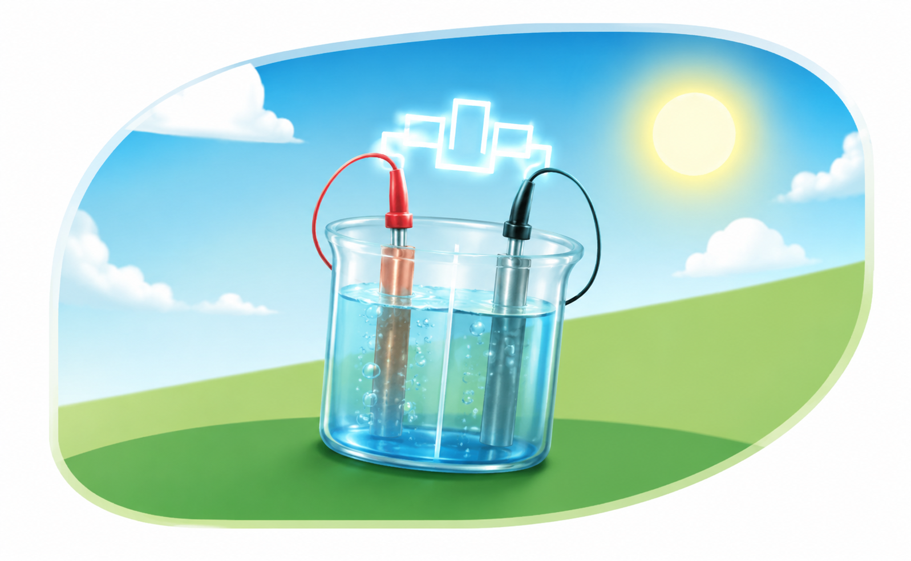

Trabalho de química
Guia dos Murcilhos de Eletroquímica
Um espaço para organizar o que os murcilhos estudaram sobre reações, energia e os processos elétricos que aparecem fora do laboratório também.
Começar pelo básico
01
Ponto de partida
O que é a eletroquímica
A eletroquímica é o ramo da química que estuda a relação entre a eletricidade e as reações químicas.
Por que isso importa
A importância da eletroquímica para a ciência e a sociedade
A eletroquímica é importante por permitir o desenvolvimento de tecnologias como baterias, pilhas e processos de proteção contra a corrosão, além de contribuir para avanços na indústria, na energia e na saúde.
Mais perto do que parece
Onde a eletroquímica está presente no cotidiano
- Pilhas
- Celulares
- Metais